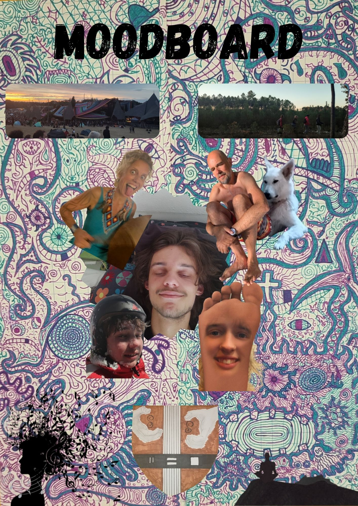

Portfolio 2025‑2026 – Transition
IUT Bordeaux Montaigne – ASSC 3 – ACM
Moi
Moi, c'est Milo, 23 ans. Je viens de Bruxelles, et ce qui m'anime profondément, ce sont les personnes que j'aime, la musique, les jeux sous toutes leurs formes et ce mouvement intérieur qui me pousse à évoluer, à avancer, à devenir un être humain plus aligné.
Sur le plan professionnel, j'ai toujours su que je voulais aider les autres. Mes voyages via wwoofing, mon passage par des études de psychologie et une formation d'enseignant primaire, ainsi que mon année de DU OPEN, centrée sur l'orientation, la méthodologie de projet, l'ouverture artistique et associative m'ont permis de comprendre que mon moteur principal est la transmission.
En 2023, j'ai donc commencé un BPJEPS Loisirs Tous Publics, en alternance à 80 % dans l'EVS Vivre Ensemble à Trélazé. C'est de là que j'ai effectué une passerelle vers l'IUT Bordeaux Montaigne, où je termine mon parcours en 2026.
Je ressens aujourd'hui le besoin profond de revenir à l'essence de ce qui m'anime, d'où ma candidature pour une passerelle vers une L3 de psychologie à la faculté de Bordeaux.
